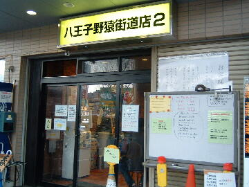
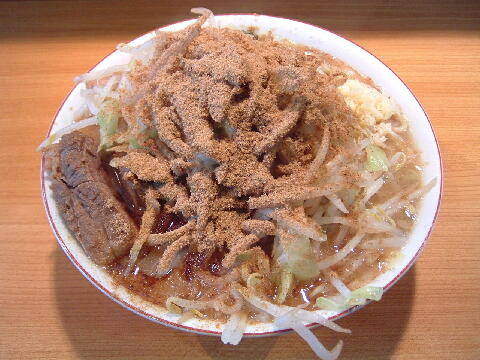
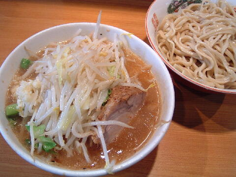
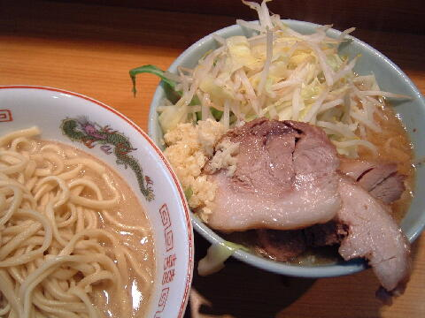
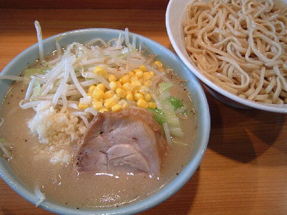

八王子市 堀之内 2-13-16
月
11：00〜14：30頃 17：00〜22：00頃
土・祝 11：00〜15：00頃 16：30〜22：00頃
日 10：30頃〜17：00頃

小ラーメン 780円
大ラーメン 880円
プチ二郎 730円、ポッチ（女性限定） 680円
つけ麺 930円
大つけ 1030円
ブタ 150円、ブタ 200円
和風BB 150円
生たまご 50円、生たまごW 100円、きまぐれたまご 100円、たまねぎたまご 100円、うずら 100円
ネギ 150円、しょうが 50円、のり 70円、のり太郎11 300円
レジェンド 200円
炙崩豚（IRUKA） 100円（現金）、高級生玉子 50円（現金）、ｋｉｒｉ（クリームチーズ） 50円（現金）
ビール缶 300円
店員は、店主とスタッフ。
白、黒コショウ。トウガラシ。醤油ダレ。
あと給水機の上にかわった調味料がある時もある。
レンゲ有、エコ箸、ティッシュ無、名刺無。
BGMは、大音量のJ-POP。なので湯切りの音はほとんど聞こえない。
トッピングは、本店と同じトッピングだが、ヤサイはドサッと、アブラはゴロッと。
食券を買ってから行列に並ぶ。
店舗の移転に伴い「〜2」となった。なので現在「〜1」は存在しない。
二郎にしてはメディアへの露出が多い。
野猿二郎 野猿街道店2のTwitter
「ラーメン二郎 野猿」でヤフー検索
「ラーメン二郎 野猿」でヤフーリアルタイム検索
「ラーメン二郎 野猿」でグーグル検索

小ラーメン ニンニク BB
麺は、黄色く弾力とコシがあるぱっつんで、噛むと小麦の旨味が広がる非常に美味い麺。硬めはできない。
ぶたは、大判厚切りで程好く味のしみた、立体的な3Dぶた。群馬県産いなか豚のうでを使用している（2011現在）。
この日はブ厚い一枚と、ドデカイ塊一個と、欠片一ヶで全て大当たり！
スープは、程好く乳化しており甘辛く美味い。水は逆浸透水を使用している。
ヤサイは、モヤシ7：キャベツ3の割合。ブランド野菜を使用している。
ニンニクは、中粒に刻まれた生ニンニク。美味しいからさ。
BB≒魚粉。 ∴味が（YAHOO！BBではなく）和風（BB）となる。
食券提出時に「辛いので！」と言うとスープに辛味を加えてくれる。

小つけ麺 ニンニク
トッピングはラーメンと同じ。
タレの丼には、ヤサイとぶたが入る。他に黒ゴマ、唐辛子が少々。ニンニクはこちらに。
麺の丼には、麺のみ。冷水でしめられた麺がシコシコ，プリプリして美味い。

小つけ麺（あつもり） ニンニク
あつもりは食券を渡す時に「あつもりで！」と言うとやってくれる。
麺の丼にトロトロの素のスープが入れられる。
あつもりだと麺がモチモチして美味い。

なみのりつけめん ニンニク
なみのりつけめんは食券を渡す時に「なみのりで！」と言うとやってくれる。
ザックリいうと塩つけめん。
期間限定。
野猿二郎はこのような個性的なラーメンが期間限定で提供されるときもある。
ＰＣ店